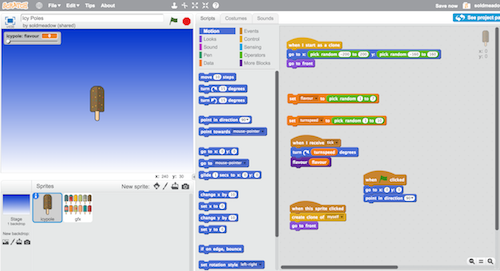

Scratch

Scratch is a visual programming tool that is targeted at beginning programmers.
Pros
- Easy to use.
- Free.
- Web and desktop versions.
- Online community with over 1 million shared projects.
Cons
- Web version requires Flash.
- Screen size of projects is limited to 480x360 pixels.
- More complex projects require convoluted work arounds.
Recommended For
- Introduction to programming for primary school, Year 7 and Year 8 students.
Details
Scratch is a visual programming tool that was developed by the Lifelong Kindergarten Group which is part of the MIT Media Lab. It can be seen as a spiritual successor to the Logo programming language that was developer by Seymour Papert to teach programming concepts to children.
Scratch is a fantastic entry point to introduce students to programming and it is widely used in schools and extra curricular programs such as CoderDojo. Students can create a myriad of interactive projects such as games, animations, interactive movies and electronic cards.
Scratch has a web based interface that requires Flash to run as well as a desktop version that can run on Mac OS X and Windows. It does not require a lot of resources and will run comfortably on older hardware and limited devices such a netbooks.
A big advantage of Scratch is the online community that has grown up around it. Scratch community members are encouraged to share their projects and remix other people’s projects. In addition to sharing projects Scratch community members participate in online forums and it is a great introduction to online collaboration and communities for children. The community is well moderated.
On the downside Scratch is showing its age, it has just recently celebrated its 10th anniversary. This is most apparent in its dependence upon Flash which has slowly been falling from favour as web sites move away from reliance on browser plugins mainly due to security concerns. The screen size of 480x360 seems antiquated in today’s widescreen high definition world. However, Scratch 3.0 is in the works and promises a modernised version based on HTML 5 technologies.
The developers of Scratch have put considerable thought into keeping it simple but, unfortunately, this can cause limitations once students want to undertake more ambitious projects. Often complex Scratch projects will have to resort to workarounds and poor practices to bypass limitations. Once students get to the point that they are “fighting” with the limitations of Scratch I would recommend they move to a new environment such as p5.js.
Example - “Bugs”
This is an example of what can be done in Scratch, click on the green flag to run. Note that you will require Flash support to be enabled in your browser to run the example.